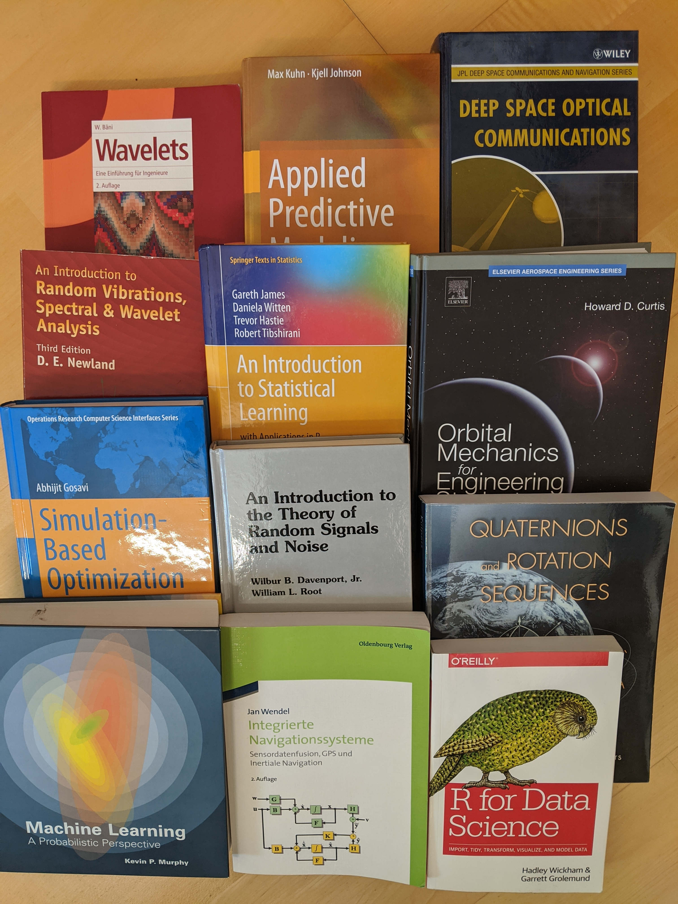

In this list I keep track of books which impressed me

Good analysis of technological and political challenge resulting from the spread of AI in many parts of daily life.
Very interesting view on how society will evolve. Stunning facts such as: - More people are overweight (2.1 billion) than malnutrioned (800 million) - More people die of obesity (3 million) than due to famine (1 million) - Diabetes kills more people (1.5 million) than human violence (620,000) - war 120,000 - crime 500,000
He therefore concludes that the old enemies of human kind
are not the biggest problems anymore, next targets for society are:
His controversial definitions or
gives food for thought.
It remains to be seen of a new religion called Dataism will really take off. However, in any case a book very much worth reading
Stunning analysis of human development and brings to attention that the development is ongoing and picking up speed, many great milestones have just happened a blink ago considering universal time spans
How will society develop in the face of the spread of AI? How did matter turn intelligent and will there be and intelligence explosion all the way to what is consciousness. A philosophical approach to the subject.
Interesting method on how to network with purpose to the benefit of all by
A wonderful story about how to to be optimistic and when optimism hits borders. Nice read which seems to be very popular in Russia.
A real eyeopener on the state of the world, or did you know that In the last 20 years, the proportion of the world population living in extreme poverty has almost halved. More stunning facts and great source of data on all kinds of questions can be found at https://www.gapminder.org. The gapminder test is worth doing http://forms.gapminder.org/s3/test-2018
From a politician of the left wing party “Die Linke” very interesting thoughts about capitalism, not the usual bashing but thoughtful analysis, definitely worth reading.
The former national security adviser of Jimmy Carter gives insight in what were the interest of the US at the time. After reading this book it seems to be easier to understand what is happening in Europe and the middle east
The former chief editor of Wired tells a entertaining story about the possibilities are available in a world were knowledge is as easily available as never before and people can connect world wide.
A great inspiration to start something yourself, so I did https://www.meetup.com/Esslingen-Makerspace
The former ARD Russia correspondent describes what happens in the Ukraine and Russia from her perspective, which is very different to what german media publicize. As a journalist she gives examples on how wording is used to frame news.
Wonderful book showing how limited our thinking really is. He gives plenty of examples
A man hugely missed not only by his supporters. This book is a brilliant read about the life of a man who had a clear set of values and lived up to them in politics against huge resistance.
How did society got started, why is Europe more influential than Africa? The book gives an explanation why societies developed differently, some areas don’t have ship able rivers, others have an unstable climate, mountains stop spread of technology, all those factors are woven to a story about the development of civilization
Detailed discussion about random noise with thorough mathematical background, a classic
A wonderful introduction to the programming language “R” for data science written by Hadley, the master himself.
The author has a great online resource on feature engineering “A Practical Approach for Predictive Models” http://www.feat.engineering )
Also the authors host a 15h course on YouTube https://www.youtube.com/channel/UC4OWDcPB1peiBXDfCSZ3h-w/playlists?view=1&sort=dd&shelf_id=0
The PDF verions of the slides is available at https://www.dataschool.io/15-hours-of-expert-machine-learning-videos/
Anderson, C. 2012. Makers: The New Industrial Revolution. Crown/Archetype. https://books.google.de/books?id=2PQFNrG9n-oC.
Bäni, Werner. 2009. Wavelets: Eine Einführung Für Ingenieure. Oldenbourg Verlag.
Brzezinski, Zbigniew. 2016. The Grand Chessboard: American Primacy and Its Geostrategic Imperatives. Basic books.
Curtis, Howard D. 2013. Orbital Mechanics for Engineering Students. Butterworth-Heinemann.
Davenport, Wilbur B, William L Root, and others. 1958. An Introduction to the Theory of Random Signals and Noise. Vol. 159. McGraw-Hill New York.
Diamond, Jared, and Lincoln E Ford. 2000. “Guns, Germs, and Steel: The Fates of Human Societies.” Perspectives in Biology and Medicine 43 (4). [Chicago] University of Chicago Press.: 609.
Gosavi, Abhijit, and others. 2015. Simulation-Based Optimization. Springer.
Harari, Yuval Noah. 2014. Sapiens: A Brief History of Humankind. Random House.
———. 2016. Homo Deus: A Brief History of Tomorrow. Random House.
———. 2018. 21 Lessons for the 21st Century. Random House.
Hemmati, Hamid. 2006. Deep Space Optical Communications. Vol. 11. John Wiley & Sons.
James, Gareth, Daniela Witten, Trevor Hastie, and Robert Tibshirani. 2013. An Introduction to Statistical Learning. Vol. 112. Springer.
Kahneman, Daniel. 2011. Thinking, Fast and Slow. Macmillan.
Krone-Schmalz, Gabriele. 2015. Russland Verstehen: Der Kampf Um Die Ukraine Und Die Arroganz Des Westens. Vol. 6195. CH Beck.
Kuipers, Jack B, and others. 1999. Quaternions and Rotation Sequences. Vol. 66. Princeton university press Princeton.
Matlin, Margaret W. 2012. “Pollyanna Principle.” In Cognitive Illusions, 267–84. Psychology Press.
Murphy, Kevin P. 2012. Machine Learning: A Probabilistic Perspective. MIT press.
Newland, David Edward. 2012. An Introduction to Random Vibrations, Spectral & Wavelet Analysis. Courier Corporation.
Rosling, H. 2018. “Factfulness: Ten Reasons We’re Wrong About the World—and Why Things Are Better Than You Think.” New York: Flatiron Books.
Schmidt, Helmut. 2009. Außer Dienst: Eine Bilanz. Siedler Verlag.
Stepper, John, and others. 2016. “Working Out Loud.” Training & Development 43 (1). Australian Institute of Training; Development: 6.
Tegmark, Max. 2017. Life 3.0: Being Human in the Age of Artificial Intelligence. Knopf.
Wagenknecht, Sahra. 2018. Reichtum Ohne Gier: Wie Wir Uns Vor Dem Kapitalismus Retten. Campus Verlag.
Wendel, Jan. 2009. Integrierte Navigationssysteme: Sensordatenfusion, Gps Und Inertiale Navigation. Oldenbourg Verlag.
Wickham, Hadley, and Garrett Grolemund. 2017. R for Data Science: Import, Tidy, Transform, Visualize, and Model Data. 1st ed. Paperback; O’Reilly Media. http://r4ds.had.co.nz/.
For attribution, please cite this work as
Sterr (2020, Jan. 17). Uwe's Blog: My book list. Retrieved from http://uwesterr.de/posts/2020-01-20-my-book-list/
BibTeX citation
@misc{sterr2020my,
author = {Sterr, Uwe},
title = {Uwe's Blog: My book list},
url = {http://uwesterr.de/posts/2020-01-20-my-book-list/},
year = {2020}
}